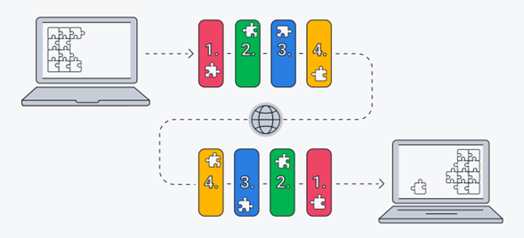

Protocolo TCP y UDP
Los protocolos TCP y UDP son dos protocolos de red utilizados para comunicar dispositivos en una red.
Ambos protocolos son ampliamente utilizados en diferentes aplicaciones de red y se pueden utilizar con sockets para facilitar la comunicación entre dispositivos en una red. Cada protocolo tiene sus propias ventajas y desventajas en diferentes situaciones, por lo que se deben elegir en función de las necesidades de la aplicación.
Protocolo TCP
El protocolo TCP (Transmission Control Protocol) se utiliza para garantizar que los datos se envíen y reciban de manera fiable y en orden. Cuando se utiliza TCP, se establece una conexión entre dos dispositivos que se mantiene abierta mientras se envían y reciben datos.
Para utilizar sockets con TCP, se deben seguir ciertos pasos. En primer lugar, se crea un socket y se establece una conexión con otro socket en la red utilizando una dirección IP y un puerto específico. Luego, se envían y reciben datos a través de la conexión establecida.
Si algún dato se pierde o se recibe en un orden incorrecto, se reenviará automáticamente hasta que se reciba correctamente. Esto garantiza que la información se envíe y reciba correctamente, aunque puede resultar en una comunicación más lenta que otros protocolos.
Los sockets en el protocolo TCP son útiles en aplicaciones que requieren una comunicación fiable y en orden, como sistemas de gestión de bases de datos en red o aplicaciones de correo electrónico.
Protocolo UDP

El protocolo UDP (User Datagram Protocol) se utiliza para enviar y recibir datos de manera rápida y eficiente, aunque no se garantiza que lleguen en orden o que se reciban todos. Cuando se utiliza UDP, se envían y reciben datos sin establecer una conexión previa.
El protocolo UDP no garantiza que los datos se envíen y reciban de manera fiable y en orden. Si algún dato se pierde o se recibe en un orden incorrecto, no se reenviará automáticamente. Esto puede resultar en una comunicación más rápida y eficiente, pero no se garantiza la integridad de la información.
Los sockets en el protocolo UDP son útiles en aplicaciones que requieren una comunicación rápida y eficiente, como juegos en línea o aplicaciones de mensajería instantánea.